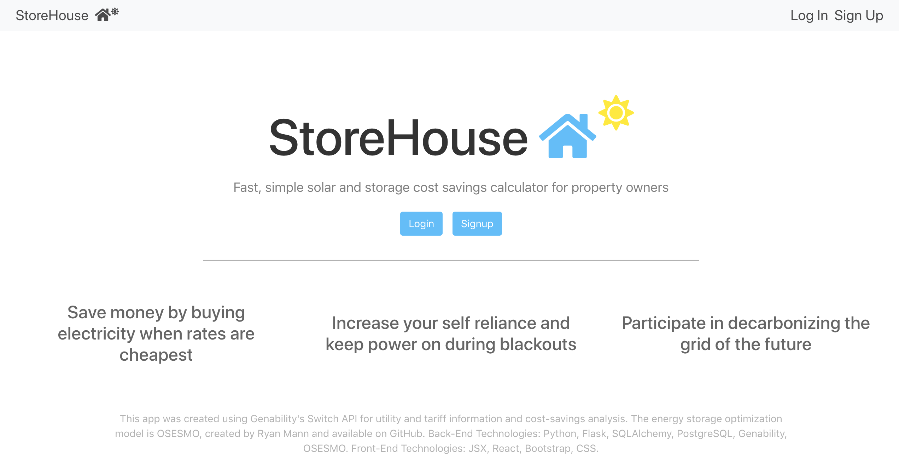
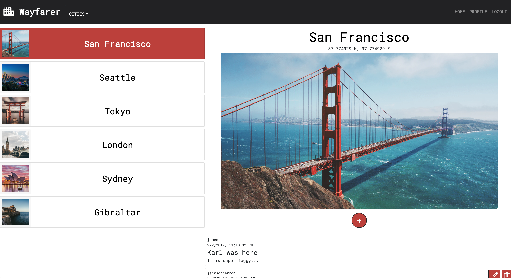
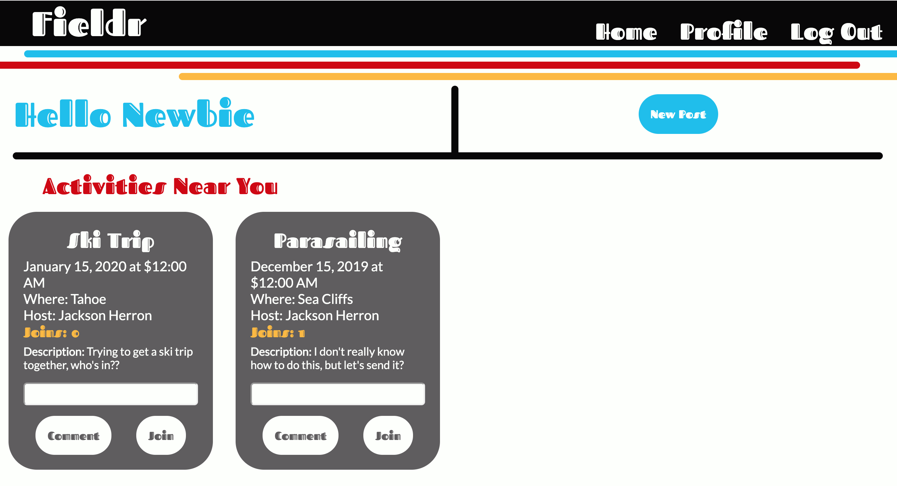
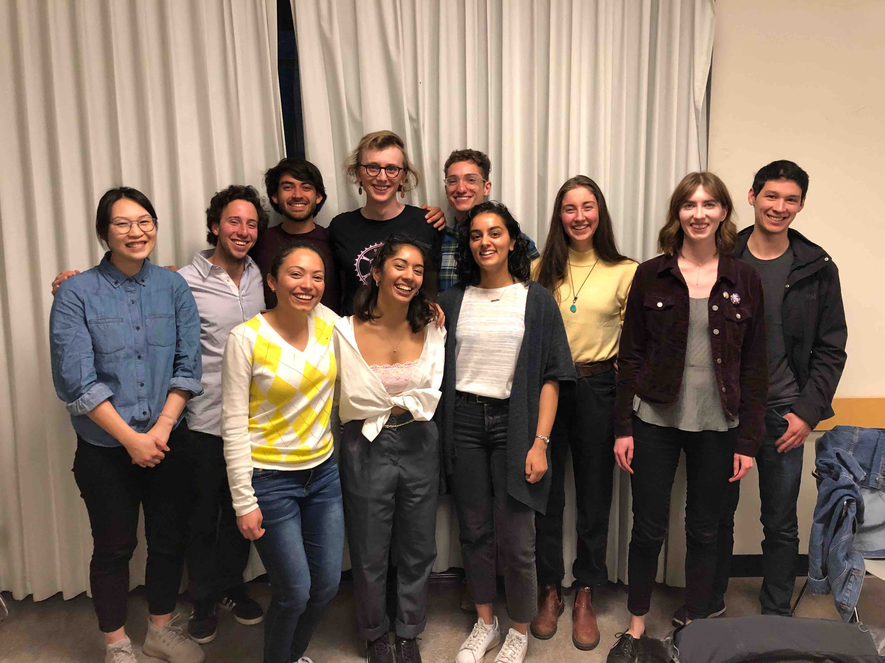
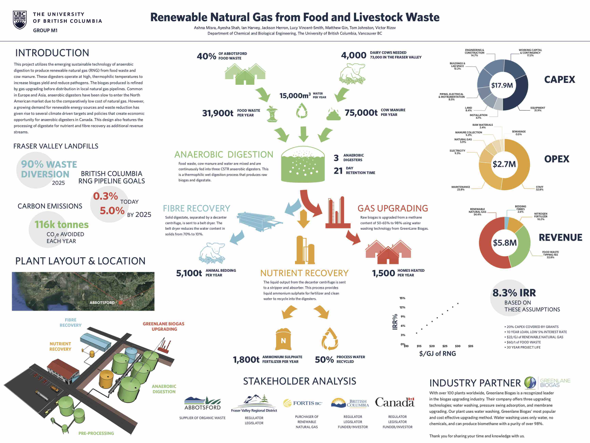

Projects
General Assembly, 2019

StoreHouse
Solar-plus-storage cost savings calculator
Python | Flask | React | Genability | OSESMO

Wayfarer
Tip-sharing site for globe-trotting travelers
MongoDB | Express | React | NodeJS

Fieldr
Sports meetup app for the funky & stylish
MongoDB | Express | EJS | NodeJS
University of British Columbia, 2014-2019

Student Directed Seminar Coordinator
Created and facilitated a 400-level student seminar with 10 students in my final semester at UBC, titled APSC 498T: Decarbonization Technology and Policy.

California's Energy Storage Market
A visual systems and map, written report, and oral presentation describing the future of energy storage in California's grid, presented in a team of 4 as our final project for APSC 498T.

Engineering Capstone Project
Delivered a comprehensive design for an organic waste to renewable natural gas facility to our industry partner, Greenlane Biogas. Took a leadership role in the team of 8.